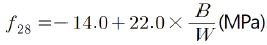
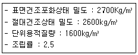
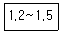
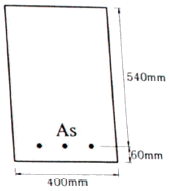
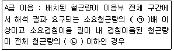
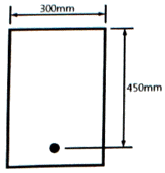
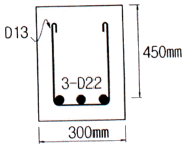
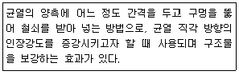

콘크리트기사 (2019-08-04 기출문제)
1과목: 재료 및 배합
1. 콘크리트용 골재 시험에 대한 설명으로 옳은 것은?
- 체가름 시험에서 체 눈에 막힌 알갱이는 파쇄되지 않도록 밀어서 빼내며, 체이 통과한 시료로 간주한다.
- 황산나트륨에 의한 안전성 시험을 할 경우, 조작을 3회 반복했을 때의 손실질량 백분율을 측정해야 한다.
- 잔골재의 입자 모양 판정 실적률 시험은 물로 씻으면서 체가름하여 2.5mm 체를 통과하고 1.2mm 체에 남아 있는 것을 시료로 사용한다.
- KS F 2510에 의해 잔골재의 유기 불순물 시험을 실시할 때 분취한 시료를 (1⑤±5)℃에서 24시간, 일정 질량이 될 떄까지 건조시켜야 하며, 약 1kg정도를 사용한다.
(정답률: 47%)

2. 레디믹스트 콘크리트의 배합에서 사용하는 배합수 중 회수수의 사용에 있어 염소이온(Cl-)의 양은 얼마로 규정하고 있는가?
- 50mg/L 이하
- 100mg/L 이하
- 150mg/L 이하
- 250mg/L 이하
(정답률: 71%)
3. 콘크리트 배합설계에서 실험으로부터 얻은 재령 28일 압축강도와 물-결합재비와의 관계식이

로 얻어졌다. 설계기준강도를 30MPa로 할 경우 적당한 물-결합재비의 값은?- 50%
- 52%
- 54%
- 56%
(정답률: 68%)
4. 르샤틀리에 비중병을 이용하여 고로 슬래그 미분말의 비중을 측정하고자 한다. 비중병에 0.2mL 눈금까지 등유를 주입한 후 고로 슬래그 70g을 개량하여 비중병에 모두 넣었을 때 등융의 눈금이 25.6mL로 증가되었다면, 고로 슬래그의 밀도는?
- 2.54g/cm3s
- 2.76g/cm3
- 2.92g/cm3
- 3.03g/cm3
(정답률: 70%)
5. 콘크리트의 배합 설계시 굵은 골재의 최대 치수에 관한 기준으로 틀린 것은?
- 단면이 큰 철근콘크리트 구조물의 경우 40mm를 표준으로 한다.
- 무근콘크리트의 경우 부재 최소 치수의 1/4을 초과해서는 안 된다.
- 철근의 피복 및 철근의 최소 순간격의 3/5을 초과해서는 안 된다.
- 굵은 골재의 최대 치수는 거푸집 양 측면 사이의 최소 거리의 1/5을 초과해서는 안 된다.
(정답률: 57%)
6. 시멘트의 제조 방법 중 습식법에 대한 설명으로 틀린 것은?
- 먼지가 적게 난다.
- 열량 손실이 많다.
- 원료를 미분말화 하기가 쉽다.
- 원료 분쇄기에 물을 약 10% 정도 가한 후 분쇄한다.
(정답률: 64%)
7. 콘크리트의 배합설계에서 잔골재율에 대한 설명으로 틀린 것은?
- 잔골재율이 적을수록 펌프로 압송하는 경우 압송성은 좋아진다.
- 잔골재율을 적게 하면 단위수량이 감소되고 단위 시멘트량이 줄어 경제적이다.
- 잔골재율이 너무 적으면 콘크리트는 거칠어지고 재료분리가 발생되는 경향이 있다.
- 잔골재율은 소요 워커빌리티를 얻을 수 있는 범위 내에서 단위수량이 최소가 되도록 시험에 의하여 결정한다.
(정답률: 49%)
8. 골재의 저장 방법에 대한 설명으로 틀린 것은?
- 잔골재와 굵은 골재는 분류하여 저장한다.
- 골재의 저장설비에는 적당한 배수시설을 설치한다.
- 빙설의 혼입 및 동결이 되지 않도록 하고 햇볕이 드는 곳에 보관한다.
- 골재의 받아들이기, 저장 및 취급에 있어서 대소의 알이 분리되지 않도록 한다.
(정답률: 75%)
9. 특수 콘크리트의 배합 시 고려해야 할 사항으로 틀린 것은?
- 경량골재 콘크리트는 공기연행 콘크리트로 하는 것을 원칙으로 한다.
- 서중 콘크리트는 수화열을 줄이기 위해 단위수량 및 단위 시멘트량을 가능한 한 줄이는 것이 좋다.
- 매스 콘크리트는 수화열을 줄이기 위해 플라이 애시 등이 혼합된 혼합형 시멘트를 사용하는 것이 좋다.
- 한중 콘크리트는 초기 강도의 발현이 중요하므로, 강도를 저해할 수 있는 AE제 등 혼화제 사용은 피한다.
(정답률: 67%)
10. 콘크리트에 부순 굵은 골재 또는 부순잔골재를 사용하는 경우에 대한 설명으로 틀린 것은?
- 부순 잔골재를 사용한 콘크리트의 건조 수축률은 미세한 분말량이 많아질수록 증가한다.
- 부순 굵은 골재를 사용한 콘크리트는 수밀성, 내구성 등을 개선시키기 위해 AE제, 감수제 등을 적당량 사용하는 것이 좋다.
- 부순 잔골재를 사용한 콘크리트는 강모래를 사용한 콘크리트와 동일한 슬럼프를 얻기 위해서 단위수량이 약 5~10%정도 많이 요구된다.
- 부순 굵은 골재를 사용한 콘크리트는 강자갈을 사용하고 동일한 물-시멘트비를 적용한 콘크리트보다 약 10% 정도 강도가 감소된다.
(정답률: 57%)
11. 콘크리트용 순환 골재의 유해물질 함유량이 허용값에 대한 설명으로 옳은 것은?
- 잔골재에 포함된 점토 덩어리량 기준은 0.5% 이하이다.
- 굵은 골재에 포함된 점토 덩어리량 기준은 1.5% 이하이다.
- 0.08mm 체 통과량(시험에서 손실된 량)은 잔골재의 경우 5.0% 이하이다.
- 0.08mm 체 통과량(시험에서 손실된 량)은 굵은 골재의 경우 1.0% 이하이다.
(정답률: 39%)
12. 플라이 애시의 품질 시험에서 시험 모르타르 제조 시 보통 포틀랜드 시멘트와 플라이 애시의 질량비는? (단, 보통 포틀랜드 시멘트:플라이애시)
- 3:1
- 2:1
- 1:1
- 1:2
(정답률: 73%)
13. 아래와 같은 조건의 잔골재의 실적률은?

- 60.5
- 61.5
- 62.5
- 63.5
(정답률: 51%)
14. 콘크리트 시방배합에 대한 배합설계 결과 잔골재 및 굵은골재의 단위량이 각각 650kg/cm3, 1⑤0kg/cm3으로 결정되었다. 현장의 잔골내 내 5mm 체에 남는 양이 5%, 굵은 골재 내 5mm 체를 통과하는 양이 8%일 때, 입도에 대한 보정을 실시한 현장배합의 잔골재( ㉠ )및 굵은 골재( ㉡ )의 단위량은?
- ㉠ :591kg.cm3, ㉡ 1109kg/cm3
- ㉠ :620kg.cm3, ㉡ 1080kg/cm3
- ㉠ :649kg.cm3, ㉡ 1⑤1kg/cm3
- ㉠ :678kg.cm3, ㉡ 1022kg/cm3
(정답률: 50%)
15. 레디믹스트 콘크리트의 혼합에 사용되는 물 중 상수돗물 pH의 허용 범위는?
- pH 3.1 이하
- pH 3.5~5.3
- pH 5.8~8.5
- pH8.7~11.2
(정답률: 52%)
16. 시멘트에 관한 설명으로 틀린 것은?
- 시멘트 분말의 비표면적을 크게 하면 강도의 발현이 빨라진다.
- 시멘트가 풍화하면 탄산가스와 수분의 반응으로 인해 비중이 높아진다.
- 시멘트의 강도는 일반적으로 표준양생 재령 28일의 강도를 말한다.
- 시멘트 제조 시 첨가하는 석고의 양을 늘리면 응결속도가 지연된다.
(정답률: 58%)
17. 콘크리트 배합설계 결정의 일반적인 순서로 옳은 것은?
- 설계기준강도 확인-배합강도 결정-사용재료 선정-시험배합 실시-시방배합 결정-현장배합으로 수정
- 배합강도 확인-설계기준강도 결정-사용재료 선정-시방배합 결정-시험배합 실시-현장배합으로 수정
- 설계기준강도 확인-사용재료 선정-배합 강도 결정-시험배합 실시-시방배합 결정-현장배합으로 수정
- 배합강도 확인-설계기준강도 결정-시방배합 결정-시험배합 실시-사용재료 선정-현장배합으로 수정
(정답률: 50%)
18. 굳지 않은 콘크리트 중의 전 염소이온량을 원칙적으로 규정하는 값(㉠)과 책임기술자의 승인을 얻어 허용할 수 있는 콘크리트 중의 전 염소이온량의 허용 상한값(㉡)으로 옳은 것은?
- ㉠:0.2kg/m3, ㉡:0.4kg/m3
- ㉠:0.2kg/m3, ㉡:0.6kg/m3
- ㉠:0.3kg/m3, ㉡:0.4kg/m3
- ㉠:0.3kg/m3, ㉡:0.6kg/m3
(정답률: 64%)
19. 강의 열처리 방법에 대한 설명으로 틀린 것은?
- 뜨임(tempering):담금질한 강에 인성을 부여하기 위하여 A1 변태점(723℃) 이하의 온도로 가열한 후 냉각처리하는 열처리 방법이다.
- 블루잉(blueing):A3 변태점(약 910℃)보다 약 30~50℃ 정도 높은 오스테나이트 영역까지 가열하여 노(壚) 안에서 서서히 냉각시키는 방법이다.
- 담금질(quenching):강의 경도, 강도를 증가시키기 위하여 오스테나이트 영역까지 가열한 다음 급랭하여 마텐자이트 조직을 얻는 열처리 방법이다.
- 불림(normalizing):결정을 균일하게 미세화하고 내부응력을 제거하여 균일한 조직으로 만들기 위해 A3 변태점 이상의 약 30~50℃의 온도로 가열하여 오스테나이트화 한 후 대기 중에서 냉각시키는 열처리 방법이다.
(정답률: 42%)
20. 공기연행제(AE제)를 사용한 콘크리트에 대한 설명으로 틀린 것은?
- 동결융해에 대한 저항성이 향상된다.
- 워커빌리티가 개선되어 시공성이 향상된다.
- 분말도가 큰 시멘트일수록 공기연행제(AE제) 사용량은 감소한다.
- 콘크리트 속에 미세한 공기를 연행시켜 볼베어링 역할을 한다.
(정답률: 71%)
2과목: 제조, 시험 및 품질관리
21. 골재의 체가름 시험으로부터 파악할 수 없는 사항은?
- 조립률
- 입도 분포
- 단위 용적질량
- 굵은 골재의 최대 치수
(정답률: 62%)
22. 여름철에 현장에서 콘크리트를 타설하면서 받아들이기 품질 검사 도중 기준에 미달되는 시험 항목에 대한 처리로 틀린 것은?
- 콘크리트 제조 회사에 신속하게 연락을 취하여 콘크리트 생산을 중지시킨다.
- 여름철이므로 기준에 미달되는 시험 항목이 있더라도 그냥 콘크리트를 타설한다.
- 현장에 도착한 레미콘 트럭을 생산공장으로 돌려보내 콘크리트를 폐기 처분한다.
- 콘크리트 받아들이기 품질 검사 항목으로 슬럼프, 공기량, 염소이온량, 펌퍼빌리티 등이 있다.
(정답률: 75%)
23. 콘크리트용 잔골재의 표준입도에 대한 설명으로 틀린 것은?
- 부순모래의 경우, 0.3mm 체를 통과한 것의 질량 백분율은 10~25%로 한다.
- 연속된 두 개의 체 사이를 통과하는 양의 백분율은 45%를 넘지 않아야 한다.
- 시방배합을 정할 때는 5mm체를 통과하고 0.08mm체에 남는 골재를 의미한다.
- 조립률이 배합설계 시 값보다 ±0.20 이상 변화되었을 때는 배합을 변경하여야 한다.
(정답률: 29%)
24. 골재의 알칼리 잠재 반응 시험방법(모르타르봉 방법)에 대한 설명으로 틀린 것은?
- 이 시험방법은 알칼리-탄산염 반응을 검출해 내는 수단으로 적합하다.
- 모르타르의 배합은 질량비로서 시멘트 1, 물 0.475, 절건 상태의 잔골재 2.25로 한다.
- 모르타르봉 길이 변화를 측정하는 것에 의해, 골재의 알칼리 반응성을 판정하는 시험방법이다.
- 시험 공시체는 시멘트 골재 배합비가 다른 2개 이상의 배치에서 각각 2개씩 최소한 4개를 만들어야 한다.
(정답률: 31%)
25. 고유동 콘크리트의 품질에 대한 설명으로 틀린 것은?
- 슬럼프 플로 도달시간을 콘크리트가 유동하기 시작하는 시점으로부터 500mm에 도달하는 시간으로 3~20초 범위를 만족하여야 한다.
- 최소 철근 순간격 60~200mm 전도의 철근콘크리트 구조물 또는 부재에서 자기충전성을 가지는 성능은 3등급 고유동 콘크리트에 해당한다.
- 굳지 않은 콘크리트의 유동성은 슬럼프 플로 600mm 이상으로 하고, 슬럼프 플로 시험 후 콘크리트 중앙부에는 굵은 골재가 모여 있지 않아야 한다.
- 고유동 콘크리트의 유동성 및 재료 분리 저항성에는 사용할 결합재 용적의 영향이 크므로, 물-결합재비 이외에 물-결합재 용적비도 함께 표시한다.
(정답률: 44%)
26. 거푸집 및 동바리의 구조계산 시 적용하는 연직하중에 대한 설명으로 틀린 것은?
- 거푸집 하중은 최소 0.4kN/m2 이상을 적용한다.
- 고정하중은 철근콘크리트와 거푸집의 중량을 고려하여 합한 하중이다.
- 보통 콘크리트의 단위중량은 17kN/m3 이며, 철근의 중량은 제외한 값이다.
- 활하중은 구조물의 연직방향으로 투영시킨 수평면적당 최소 2.5kN/m2 이상으로 하여야 한다.
(정답률: 52%)
27. 탄산화 속도를 나타내는 가장 기본적인 추정식으로 옳은 것은? (단, X:기준이 되는 콘크리트 탄산화 깊이(cm), t:경과년수(년), R:실험에 의해 구할 수 있는 상수)
- X=R√t
- X=Rㆍt
- X=Rㆍt2
- X=Rㆍt3
(정답률: 63%)
28. AE콘크리트의 성질로 가장 거리가 먼 것은?
- 콘크리트의 블리딩을 감소시킨다.
- 콘크리트의 워커빌리티 개선 효과가 있다.
- 내부 공극이 증가하여 동결융해 저항성이 저하된다.
- 공기량을 증가시키면 압축강도 및 휨강도는 저하하는 경향이 있다.
(정답률: 53%)
29. 콘크리트의 휨 강도 시험용 공시체를 4점 재하 장치로 시험한 결과, 최대 하중 35kN에서 지간의 가운데 부분에서 파괴되었다. 이 콘크리트의 휨 강도는? (단, 공시체의 크기는 150mm×150mmm×530mm이며, 지간은 450mm이다.)
- 3.69MPa
- 4.01MPa
- 4.23MPa
- 4.67MPa
(정답률: 47%)
30. 콘크리트의 품질관리 기법 중 관리도에서 나열된 점들이 이상이 있는 경우로 옳지 않은 것은?
- 점이 위로 연속적으로 이동해 가는 경우
- 점들이 중심선 인근에 연속적으로 나타난 경우
- 점들이 한계선에 접하여 자주 나타나는 경우
- 연속한 20점 중 10점 이상 중심선 한쪽으로 편중된 경우
(정답률: 40%)
31. 배치 플랜트에서 콘크리트의 생산능력을 표시하는 기준은?
- 믹서의 용적
- 투입된 혼화제의 용량
- 믹서의 시간당 혼합능력
- 시멘트 저장 사이로의 용적
(정답률: 60%)
32. 레디믹스트 콘크리트(KS F 4009)에 관한 설명으로 틀린 것은?
- 레디믹스트 콘크리트의 제조 설비로서 믹서는 고정 믹서로 한다.
- 일반적으로 레디믹스트 콘크리트의 염화물 함유량(염소 이온(Cl-)량)은 0.3kg/m3이하로 한다.
- 덤프트럭으로 콘크리트를 운반하는 경우, 운반 시간의 한도는 혼합하기 시작하고 나서 1시간 이내에 공사 지점에 배출할 수 있도록 운반한다.
- 트럭애지테이터로 운반했을 때 콘크리트의 1/3과 2/3의 부분에서 각각 시료를 채취하여 슬럼프 시험을 하였을 경우 슬럼프의 차이가 20mm 이하이어야 한다.
(정답률: 53%)
33. 콘크리트 타설 시 침하균열 방지 및 조치에 대한 설명으로 틀린 것은?
- 콘크리트 타설 속도를 늦추고, 1회의 타설 높이를 작게 한다.
- 단위 수량을 될 수 있는 한 크게 하여 슬럼프가 큰 콘크리트로서 시공한다.
- 콘크리트가 굳기 전에 침하균열이 발생한 경우 즉시 다짐이나 재 진동을 실시한다.
- 슬래브와 보의 콘크리트가 벽 또는 기둥이 콘크리트와 연속되어 있는 경우에는 벽 또는 기둥의 콘크리트 침하가 거의 끝난 다음 슬래브, 보의 콘크리트를 타설한다.
(정답률: 68%)
34. 콘크리트의 품질관리 중 콘크리트의 받아들이기 품질검사에 대한 설명으로 틀린 것은?
- 내구성 검사는 공기량, 염소이온량을 측정하는 것으로 한다.
- 강도 검사는 압축강도시험에 의해 실시하는 것을 표준으로 한다.
- 콘크리트의 받아들이기 품질관리는 콘크리트를 타설하기 전에 실시해야 한다.
- 워커빌리티 검사는 굵은 골재 최대 치수 및 슬럼프가 설정치를 만족하는지의 여부를 확인하고 재료 분리 저항성을 외관관찰에 의해 확인해야 한다.
(정답률: 36%)
35. 콘크리트의 슬럼프 시험방법에 대한 설명으로 틀린 것은?
- 다짐봉의 다짐 깊이는 아래층에 거의 도달할 정도로 다진다.
- 재료분리가 발생할 염려가 있는 경우에는 다짐수를 줄일 수 있다.
- 슬럼프 콘을 들어 올리는 시간은 높이 300mm에서 4~5초로 한다.
- 시료를 거의 같은 양의 3층으로 나누어 채우고 각 층은 다짐봉으로 고르게 25회씩 다진다.
(정답률: 57%)
36. 일반적인 한중 콘크리트는 하루 평균 기온이 몇 ℃이하가 예상될 때 타설하는 콘크리트를 말하는가?
- 0℃
- 4℃
- 8℃
- 12℃
(정답률: 74%)
37. 콘크리트의 휨 강도 시험방법(KS F 2408)에 대한 설명으로 틀린 것은?
- 지간은 공시체 높이의 3배로 한다.
- 4점 재하법에 따라 공시체의 휨 강도를 측정하는 방법이다.
- 공시체에 하중을 가하는 속도는 가장자리 응력도의 증가율이 매초 0.6±0.4MPa이 되도록 한다.
- 공시체가 인장쪽 표면의 지간 방향 중심선의 4점의 바깥쪽에서 파괴된 경우는 그 시험 결과를 무효로 한다.
(정답률: 57%)
38. 콘크리트 중에 사용되는 잔골재의 염화물(NaCl 환산량) 함유량의 허용 한도는?
- 0.04%
- 0.06%
- 0.09%
- 0.35%
(정답률: 44%)
39. 콘크리트 제조과정 중 혼화제 7kg을 계량할 때 허용오차의 최대 범위로 옳은 것은?
- 6.72kg~7.28kg
- 6.79kg~7.21kg
- 6.86kg~7.14kg
- 6.93kg~7.07kg
(정답률: 61%)
40. 지름 100mm, 길이 200mm인 공시체로 쪼갬 인장 강도 시험을 할 때, 최대 하중이 100kN일 때 쪼갬 인장 강도는?
- 1.78MPa
- 3.18MPa
- 4.36MPa
- 5.18MPa
(정답률: 51%)
3과목: 콘크리트의 시공
41. 경량골재 콘크리트에 관한 설명으로 틀린 것은?
- 경량골재 콘크리트의 공기량은 일반 공재를 사용한 콘크리트보다 1% 크게 해야 한다.
- 경량골재 콘크리트는 일반 골재를 사용한 콘크리트보다 가볍기 때문에 슬럼프가 크게 나오는 경향이 있다.
- 경량골재는 보통골재에 비하여 물을 흡수하기 쉬우므로 이를 건조한 상태로 사용하면 비비기, 운반, 타설 중에 품질이 변동하기 쉽다.
- 경량골재 콘크리트는 일반 콘크리트에 비해 진동기를 찔러 넣는 간격을 작게 하거나 진동시간을 약간 길게 하여 충분히 다져야 한다.
(정답률: 32%)
42. 섬유보강 콘크리트에 관한 설명으로 틀린 것은?
- 강섬유보강 콘크리트의 보강효과는 강섬유가 길수록 길다.
- 보강용 섬유의 탄성계수는 시멘트 결합재 탄성계수의 1/10이하이어야 한다.
- 섬유보강 콘크리트의 비비기에 사용하는 믹서는 강제식 믹서를 사용하는 것을 원칙으로 한다.
- 보강용 섬유를 혼입하여 주로 인성, 균열 억제, 내충격석 및 내마모성 등을 높인 콘크리트를 섬유보강 콘크리트라고 한다.
(정답률: 41%)
43. 숏크리트의 강도에 대한 설명으로 틀린 것은?
- 재령 24시간에서 숏크리트의 초기강도는 5.0~10.0MPa를 표준으로 한다.
- 재령 3시간에서 숏크리트의 초기강도는 1.0~3.0MPa을 표준으로 한다.
- 일반 숏크리트의 장기 설계기준 압축강도는 재령 91일로 설정하며 그 값은 24MPa 이상으로 한다.
- 영구 지보재 개념으로 숏크리트를 타설 할 경우 재령 28일 부착강도는 1.0MPa이상이 되도록 관리한다.
(정답률: 46%)
44. 유동화 콘크리트의 배합에 대한 일반적인 설명으로 틀린 것은?
- 슬럼프 증가량은 100mm 이하를 원칙으로 하며, 50~80mm를 표준으로 한다.
- 베이스 콘크리트의 슬럼프는 콘크리트의 유동화에 지장이 없는 범위의 것이어야 한다.
- 잔골재율 결정 시 베이스 콘크리트의 슬럼프에 적합한 잔골재율로 결정해야 유동화 후 콘크리트의 품질이 좋다.
- 공기연행제의 사용량은 유동화 후 목표공기량이 얻어질 수 있도록 베이스 콘크리트 상태에서 약간 많은 공기량의 확보가 필요하다.
(정답률: 23%)
45. 콘크리트 공장제품의 경화를 촉진하기 위해 실시하는 촉진양생방법에 속하지 않는 것은?
- 습윤양생
- 증기양생
- 적외선양생
- 오토클레이브 양생
(정답률: 64%)
46. 일평균기온이 30℃ 이상인 하절기에 슬래브 콘크리트를 타설할 경우 콘크리트의 습윤 양생 기간의 표준은? (단, 보통 포틀랜드 시멘트를 사용한 경우)
- 3일
- 5일
- 7일
- 9일
(정답률: 45%)
47. 프리플레이스트 콘크리트에 사용되는 골재에 대한 설명으로 옳은 것은?
- 굵은 골재의 최소 치수는 15mm 이상으로 하여야 한다.
- 일반적으로 굵은 골재의 최대 치수는 최소 치수의 1.5~2배 정도로 한다.
- 굵은 골재의 최대 치수와 최소 치수와의 차이를 적게 하면 주입모르타르의 소요량이 적어진다.
- 대규모 프리플레이스트 콘크리트를 대상으로 할 경우, 굵은 골재의 최소 치수를 작게 하는 것이 효과적이다.
(정답률: 23%)
48. 포장용 콘크리트에서의 휨 호칭강도로 옳은 것은?
- 2.5MPa
- 3.5MPa
- 4.5MPa
- 5.5MPa
(정답률: 55%)
49. 한중 콘크리트를 비볐을 때 콘크리트의 온도가 20℃, 주위의 기온이 4℃, 비빈후부터 타설이 끝날을 때까지의 시간이 1.5시간일 경우 타설이 완료된 후 콘크리트의 온도는?
- 11.3℃
- 13.4℃
- 15.3℃
- 16.4℃
(정답률: 40%)
50. 서중 콘크리트의 타설에 대한 설명으로 틀린 것은?
- 콘크리트를 타설할 때의 콘크리트 온도는 25℃이하이어야 한다.
- 콘크리트 타설은 콜드조인트가 생기지 않도록 적절한 계획에 따라 실시하여야 한다.
- 콘크리트는 비빈 후 즉시 타설하여야 하며, 일반적인 대책을 강구하더라도 1.5시간 이내에 타설하여야 한다.
- 타설 전 거푸집, 철근 등이 직사일광을 받아 고온이 될 우려가 있는 경우 살수, 덮개 등의 적절한 조치를 하여야 한다.
(정답률: 58%)
51. 방사선 차폐용 콘크리트에 대한 설명으로 틀린 것은?
- 물-결합재비는 60% 이하를 원칙으로 한다.
- 일반적인 경우 콘크리트의 슬럼프는 150mm이하로 하여야 한다.
- 생물체의 방호를 위하여 X선, γ선 및 중성자선을 차폐할 목적으로 사용한다.
- 차폐용 콘크리트로서 필요한 성능인 밀도, 압축강도, 설계허용온도, 결합수량, 붕소량 등을 확보하여야 한다.
(정답률: 61%)
52. 팽창 콘크리트의 시공의 대한 설명으로 틀린 것은?
- 팽창 콘크리트의 강도는 일반적으로 재령 7일의 압축강도를 기준으로 한다.
- 팽창 콘크리트의 팽창률은 일반적으로 재령 7일에 대한 시험값을 기준으로 한다.
- 팽창재는 다른 재료와 별도로 질량으로 계량하며, 그 오차는 1회 계량분량의 1% 이내로 하여야 한다.
- 콘크리트를 비비고 나서 타설을 끝낼 때까지의 시간은 기온ㆍ습도 등의 기상조건과 시공에 관한 등급에 따라 1~2시간 이내로 하여야 한다.
(정답률: 25%)
53. 콘크리트 재료의 계량에 대해 설명으로 틀린 것은?
- 각 재료는 1배치씩 질량으로 계량한다.
- 계량은 시방 배합에 의해 실시하는 것으로 한다.
- 골재의 유효 흡수율은 보통 15~30분간의 흡수율로 본다.
- 혼화제를 녹이는 데 사용하는 물은 단위수량의 일부로 본다.
(정답률: 51%)
54. 콘크리트 타설에 대한 설명으로 틀린 것은?
- 타설한 콘크리트를 거푸집 안에서 횡방향으로 이동시켜서는 안 된다.
- 콘크리트를 2층 이상으로 나누어 타설할 경우, 상층의 콘크리트 타설은 원칙적으로 하층의 콘크리트가 굳기 시작하기 전에 해야 한다.
- 콘크리트 타설 도중 표면에 떠올라 고인 블리딩수가 있을 경우에는 적당한 방법으로 이 물을 제거한 후가 아니면 그 위에 콘크리트를 쳐서는 안 된다.
- 외기온도가 25℃를 초과하는 경우 하층 콘크리트 타설 완료 후, 정차시간을 포함하여 상층 콘크리트가 타설 완료되기까지의 시간이 2.5시간을 넘어서는 안된다.
(정답률: 56%)
55. 수평 및 연직시공이음에 대한 설명으로 틀린 것은?
- 수평시공이음이 거푸집에 접하는 선은 될 수 있는 대로 수평한 직선이 되도록 한다.
- 연직시공이음부의 거푸집 제거 시기는 콘크리트를 타설하고 난 후 3일 이상이 경과하여야 한다.
- 역방향 타설 콘크리트의 시공 시에는 콘크리트의 침하를 고려하여 수평시공이음이 일체가 되도록 시공방법을 선정하여야 한다.
- 구 콘크리트의 연직시공이음 변은 쇠솔이나 쪼아내기 등으로 거칠게 하고, 수분을 충분히 흡수시킨 후에 시멘트풀, 모르타르 또는 습윤면용 에폭시수지 등을 바른 후 새 콘크리트를 타설하여 이어나가야 한다.
(정답률: 46%)
56. 매스 콘크리트의 온도균열 발생에 대한 검토는 온도균열지수에 의해서 평가하는 것이 일반적이다. 다음 중 철근이 배치된 일반적인 구조물의 표준적인 온도 균열지수를 아래와 같이 규정하는 경우에 해당하는 것은?

- 균열발생을 제한할 경우
- 유해한 균열이 발생할 경우
- 균열발생을 방지하여야 할 경우
- 유해한 균열발생을 제한할 경우
(정답률: 43%)
57. 수밀 콘크리트의 배합에 대한 설명으로 옳은 것은?
- 단위 굵은 골재량은 되도록 작게 한다.
- 물-결합재비는 50% 이하를 표준으로 한다.
- 콘크리트의 소요 슬럼프는 되도록 적게 하여 100mm를 넘지 않도록 한다.
- 공기연행제, 공기연행감제 등을 사용하는 경우라도 공기량은 6% 이하가 되게 한다.
(정답률: 35%)
58. 거푸집 및 동바리 구조계산에 대한 설명으로 틀린 것은?
- 거푸집 하중은 최소 4kN/m2 이상을 적용한다.
- 거푸집 설계에서는 굳지 않은 콘크리트의 측압을 고려하여야 한다.
- 고정하중은 철근 콘크리트와 거푸집의 중량을 고려하여 합한 하중이다.
- 콘크리트의 단위중량은 철근의 중량을 포함하여 보통 콘크리트의 경우 24kN/m3을 적용한다.
(정답률: 45%)
59. 고강도 콘크리트 제조방법으로 틀린 것은?
- 실리카 퓸 등과 같은 혼화 재료를 사용한다.
- 단위 시멘트량은 가능한 한 적게 되도록 시험에 의해 정한다.
- 철저히 습윤 양생을 하여야 하며, 부득이한 경우 현장 봉함양생 등을 실시할 수 있다.
- 강도 콘크리트에 사용되는 굵은 골재는 가능한 40mm 이하로 하며, 철근 최소 수평 순간격의 1/3 이내의 것을 사용하도록 한다.
(정답률: 35%)
60. 콘크리트 공장제품의 압축강도시험을 실시한 결과 시험체의 단면적이 7850mm2, 파괴 시 최대 하중이 165kN이었다면, 압축강도는?
- 15MPa
- 18MPa
- 21MPa
- 24MPa
(정답률: 55%)
4과목: 구조 및 유지관리
61. b=400mm, d=540mm, h=600mm인 직사각형 보에 인장철근이 1열 배근된 철근콘크리트 단면의 균형 단면 철근단면적(As)은? (단, fck=28MPa, fy=400MPa)

- 5462mm2
- 5959mm2
- 6554mm2
- 7283mm2
(정답률: 41%)
62. 철근콘크리트 보에서 전단철근에 대한 설명으로 틀린 것은?
- 종방향 철근의 다우얼력을 증진시킨다.
- 보의 전단 저항 능력의 일부분을 분담한다.
- 철근콘크리트 보에 전단철근량이 많을수록 거동에 유리하다.
- 경사균열의 폭을 제한하여, 골재의 맞물림에 의한 전단저항력을 증진시킨다.
(정답률: 57%)
63. 강도설계법에 의한 전단설계에서, 전단보강철근을 사용하지 않고 계수하중에 의한 전단력 Vu=50kN을 지지하려고 한다. 보의 400mm일 경우, 보 유효높이의 최소값은? (단, fck=25MPa)
- 150mm
- 200mm
- 300mm
- 400mm
(정답률: 21%)
64. 주입공법의 종류 중 저압ㆍ지속식 주입공법에 대한 설명으로 틀린 것은?
- 주입되는 수지는 다양한 점도의 것을 사용할 수 있다.
- 저압이므로 주입기에 여분의 주입재료가 남지 않아 재료의 손실이 없다.
- 저압이므로 실(seal)부의 파손도 작고 정확성이 높아 시공관리가 용이하다.
- 주입되는 수지의 양을 관찰하기 용이하므로 주입상황을 비교적 정확하게 파악할 수 있다.
(정답률: 60%)
65. 인장 이형철근의 겹침이음의 A급 이음에 대한 아래의 설명에서 ()에 적합한 수치는?

- ㉠:2.0, ㉡:1/2
- ㉠:2.5, ㉡:1/5
- ㉠:1.5, ㉡:1/3
- ㉠:1.0, ㉡:1/4
(정답률: 37%)
66. 콘크리트 균열에 대한 설명으로 틀린 것은?
- 상수도 시설물의 허용 휨인장균열폭은 0.25mm이다.
- 균열 검증은 영구하중(또는 지속하중)을 대상으로 한다.
- 허용균열폭 산정 시 피복두께의 영향을 고려하지 않는다.
- 전 단면이 인장을 받는 경우, 휨인장을 받는 경우보다 허용균열폭을 더 작게 한다.
(정답률: 61%)
67. 크리프의 특성에 대한 설명으로 틀린 것은?
- 하중이 실릴 때 콘크리트 구조물의 재령이 클수록 크리프는 작게 일어난다.
- 재하 후 첫 28일 동안 총 크리프 변형률의 1/2 이하가 진행되며 2~5년 후에 최종값에 근접한다.
- 콘크리트가 놓이는 주위의 온도가 높을수록, 습기가 낮을수록 크리프 변형은 작아진다.
- 물-결합재비가 큰 콘크리트는 물-결합재비가 작은 콘크리트보다 크리프가 크게 일어난다.
(정답률: 45%)
68. 콘크리트의 탄산화에 의하여 직접적으로 영향을 받는 열화는?
- 건조수축
- 레이턴스
- 철근의 부식
- 크리프 변형
(정답률: 56%)
69. 그림의 단면에 균형 철근량이 배근되었을 때의 등가압축응력의 깊이(a)는? (단, fck=30MPa, fy=400MPa이다.)

- 206mm
- 226mm
- 236mm
- 270mm
(정답률: 31%)
70. 콘크리트가 외부로부터의 화학작용을 받아 시멘트 경화체를 구성하는 수화생성물이 변질 또는 분해하여 결합 능력을 잃는 열화현상을 총칭하여 ‘화학적 부식’이라고 한다. 다음 화학물질 중 침식 정도가 극히 심한 침식을 일으키는 것은?
- 콜타르
- 파라핀
- 질산암모늄
- 과망간산칼륨
(정답률: 56%)
71. 300mm×500mm 직사각형 단면의 띠철근 기둥이 양단 한지로 구속되어 있을 때, 단주의 한계 높이는? (단, 비횡구속골조의 압축부재이다.)
- 1320mm
- 1980mm
- 2980mm
- 3300mm
(정답률: 25%)
72. 구조물의 콘크리트에 대한 비파괴 현장 시험이 아닌 것은?
- 내시경 시험
- 레이더 시험
- 초음파 시험
- 콘크리트 코어 압축강도 시험
(정답률: 58%)
73. 콘크리트 보수 시 기존 콘크리트와 보수재료의 부착이 잘 되기 위한 조치로 틀린 것은?
- 부착면을 깨끗하게 한다.
- 바탕 표면을 거칠게 한다.
- 보수재료를 충분히 압착한다.
- 바탕의 미세한 구멍을 메운다.
(정답률: 54%)
74. 폭 300mm, 인장철근까지의 유효깊이 550mm, 압축철근까지의 50mm, 인장철근량 5000mm2, 압축철근량 2000mm2의 복철근 직사각형 단면이 연성파괴를 한다면 설계휨강도(Md)는? (단, fck=20MPa, fy=300MPa)
- 516kNㆍm
- 548kNㆍm
- 576kNㆍm
- 608kNㆍm
(정답률: 18%)
75. 콘크리트와 철근의 부착에 영향을 주는 일반적인 사항으로 틀린 것은?
- 경미한 녹이 발생한 철근은 부착을 해치지 않는다.
- 이형 철근의 부착강도가 원형 철근의 부착강도보다 크다.
- 수평철근은 콘크리트의 블리딩으로 인해 연직철근보다 부착강도가 떨어진다.
- 동일한 철근비를 가질 경우 철근의 직경이 가는 것을 여러 개 쓰는 것보다 굵은 것을 쓰는 것이 유리하다.
(정답률: 53%)
76. 아래 그림과 같은 단철근 직사각형 보에서의 공칭전단강도(Vn)는? (단 스터럽은 D13(공칭단면적 126.7mm2)을 사용하며, 스터럽 간격은 200mm이고, fck=28MPa, fy=350MPa이다.)

- 158.2kN
- 318.6kN
- 376.3kN
- 463.2kN
(정답률: 31%)
77. 아래에서 설명하는 균열의 보수 방법은?

- 봉합법
- 짜깁기법
- 드라이 패킹
- 보강철근 이용방법
(정답률: 33%)
78. 황산염 침투에 의한 열화 방지 방법이 아닌 것은?
- C3A 함량 증대
- 고로 슬래그 첨가
- 플아이 애시 첨가
- 적절한 공기연행제 첨가
(정답률: 49%)
79. 콘크리트 펌프 압송 시에 대한 설명으로 틀린 것은?
- 보통 콘크리트의 슬럼프는 100~180mm 범위가 적당하다.
- 보통 콘크리트의 굵은 골재 최대 치수는 40mm 이하로 한다.
- 펌핑 시 최대 소요 압력은 유사현장의 실적이나 펌핑 시험을 통해 결정한다.
- 압송을 수월하게 하기 위하여 슬럼프 값을 가능한 높게 한 유동화 콘크리트를 사용한다.
(정답률: 39%)
80. 철근의 부식으로 인해 콘크리트에 나타나는 박리의 원인이 아닌 것은?
- 철근의 지름
- 철근의 항복강도
- 콘크리트의 인장강도
- 철근을 피복하고 있는 콘크리트의 품질
(정답률: 20%)